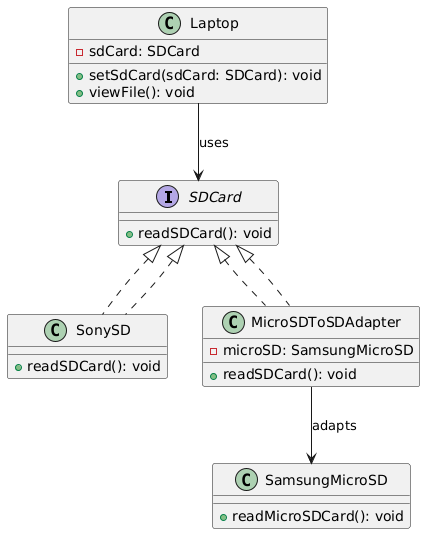

Imagine you have a laptop that accepts only standard SD cards. Now, you want to read data from a Samsung Micro SD card 🗃️, but it’s not directly compatible with the laptop’s SD card slot. Luckily, you have an SD adapter. By inserting the Micro SD into the adapter, it now fits and functions just like a standard SD card. The laptop reads the data seamlessly — all because the adapter bridges the gap between the incompatible interfaces.
The SD adapter converts the Micro SD interface to the SD format so the laptop can read the card as if it were a native SD device.
Problem:
The Micro SD card uses a different interface than the laptop SD slot. You can't insert or read it directly without an adapter, making the two systems incompatible.
🔌 Adapter Pattern Solution:
We use an Adapter class to wrap the Micro SD card and present it through the expected SD card interface. This allows the laptop to interact with it without needing to know the internal differences.
UML Diagram:
Output:
Card inserted into laptop slot.
💽 Converting Micro SD Card to SD Card format...
Reading data from Samsung Micro SD Card 🗃️